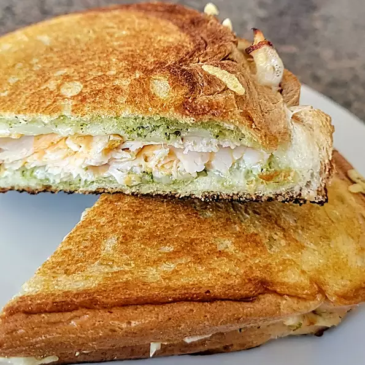

Italian Chicken Panini

A delicious chicken panini recipe gifted to the world by Michelle's mother
Ingredients
- 1 tablespoon olive oil, or as needed
- 2 slices Italian bread
- 1 tablespoon pesto
- 2 slices mozzarella cheese
- ¼ pound sliced cooked chicken breast
Steps
- Preheat an electric grill (such as George Foreman®) for medium heat. Spread olive oil on one side of each bread slice.
- Place one slice of bread, oil-side down, on the preheated grill. Spread 1/2 of the pesto on the bread and put a slice of mozzarella cheese over top. Arrange chicken over the cheese and top with remaining mozzarella. Spread remaining pesto on the other slice of bread and place on top of the sandwich.
- Close the grill and cook until cheese is melted and bread is golden brown and crispy, about 4 minutes.